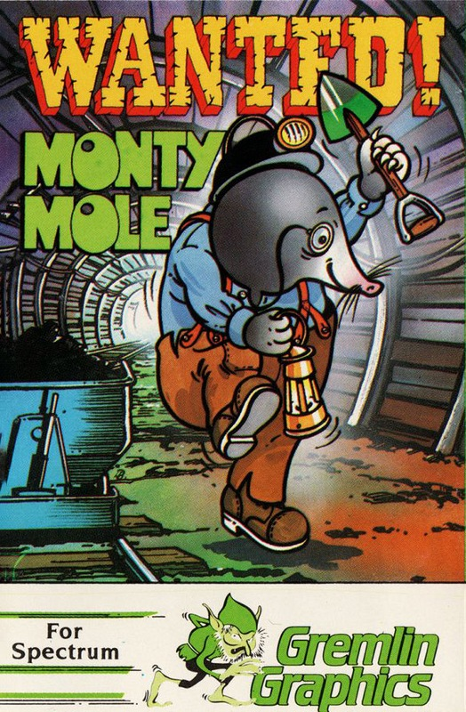
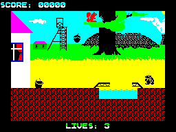
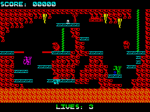
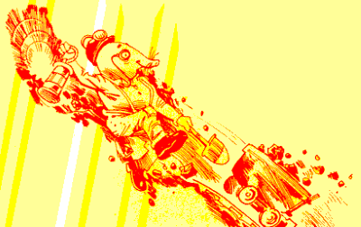

Wanted! Monty Mole


{kind=link}

| Publisher: | Gremlin Graphics |
| Price: | £6.95 |
| Year: | 1984 |
| Source: | CRASH, Issue 9 |

The inlay says that this game has caused quite a stir with games experts, the national press and television. Television was naturally interested because the game contains a caricature of Arthur Scargill, the Miners’ Union leader. In fact a sequence was shown on TV News at the height of the strike. It’s been released simultaneously for the Spectrum and the Commodore 64, but reviewers in the CRASH office feel that, with all the Commodore’s better looking graphics, the Spectrum version is the better game of the two.

Arthur’s mine
The story goes that it’s a long, chilling winter, and Monty Mole makes a daring bid to raid his local South Yorkshire pit to snatch coal. Battling through flying pickets, man-eating fish, coal crushers and drills, he escapes to emerge in Arthur’s Castle. Seizing his only chance of toppling the great man, Monty collects the secret ballot papers and vote casting scroll. But Arthur’s no fool when it comes to the heavy stuff and his personal bodyguards put up a struggle.
So much for the blurb — what about the game? Instant viewing will bring Manic Miner/Jet Set Willy to mind, and not without some justification, for Wanted: Monty Mole is a complex platform game with a jumping character and interlinked rooms to the maze. There are also a few guessing tricks involved and a strategic element to finding the route through a room or series of rooms. Monty himself is an endearing character likely to reappear in more games, who has an attractive walking gait and an athletic jump very reminiscent of his mining cousin from Surbiton.

know where to go
Unlike Manic Miner, which ends on the surface, Monty starts on the top in a screen with a bridge over troubled waters, squirrels dropping acorns and a steaming bucket. The bucket looks tempting — it should be, for without it coal won’t even appear in the mine shafts to be collected. First timers, take heed — grab the bucket and run like hell! The mine shafts contain ropes, moving platforms and dice-with-death crushers as well as ghosts, monsters and deadly machines. There are also objects to be collected but only the coal lumps score points. The objects do, however, have their uses, and it will no doubt be the cause of much speculation and playing hints in issues to come, as to what does what. One thing is certain, some useful objects cannot be collected until a particular tool on the screen has been collected first. In all there are 21 rooms, or levels, to get through.
CRITICISM

‘In my view Monty Mole will be a future Spectrum hero and there will be posters of him adorning every wall in Britain. After hearing about this game on the News, I thought it would be a winner, and when it arrived I found I was right. If you liked Manic Miner (is there anyone who doesn’t?) you will love Monty Mole because it’s a classic platform game, more complicated and, in my opinion, better than Manic Miner. The graphics are certainly up to MM standards and with no serious attribute problems. As to the sound — well the Spectrum’s never been up to much on sound, so don’t expect too much! I found this game fun to play and certainly addictive this has got to be one of the best games for the Spectrum this year and definitely worth buying.’
‘Monty Mole is a fantastic Jet Set Willy type of game with excellent graphics and a good use of colour throughout. I liked Monty because he is well detailed and animated, as are the flying pickets, hair sprays, debris and so on. It is very addictive, and I will be coming back again and again. The only thing is that a bit of continuous sound wouldn’t hurt.’
‘This program carries on where Manic Miner left off on a similar platform basis, again in the mining industry. As the game progresses, the dangers increase dramatically. Monty is very well animated, and moves about with ease from the well positioned control keys. Well into the game the elusive Arthur Scargill appears with a big head and a huge conk. Overall I got completely immersed in this well thought out and highly addictive game which I think will provide many hours of fun.’
‘One of the major distinctions between Monty and Willy, is that Monty requires a deal of luck in certain situations, like the crushers. While this might be thought to reduce the playing skill element, it does add one of sheer thrill and nerves. The graphics, design and animation of all the moving characters is excellent, amusing and attractive, and that adds quite a bit to the playability of the game. Whether Monty Mole is better than Manic Miner will have to remain a question of the near future, and more hours playing. I suspect it might be better by a touch; better than Jet Set Willy? I don’t know that either, pretty much as good though.’
COMMENTS
| Control keys: | Q/A up/down, O/P left/right, B to SPACE = jump |
| Joystick: | Kempston, Sinclair ZX 2 |
| Keyboard play: | Very responsive, good positions |
| Use of colour: | Excellent |
| Graphics: | Very good, sensible scale |
| Sound: | Good |
| Skill levels: | 1 |
| Lives: | 3 |
| Screens: | 21 |
| General rating: | Highly addictive, excellent value. |
| Use of computer: | 86% |
| Graphics: | 94% |
| Playability: | 95% |
| Getting started: | 88% |
| Addictive qualities: | 96% |
| Value for money: | 90% |
| Overall: | 92% |